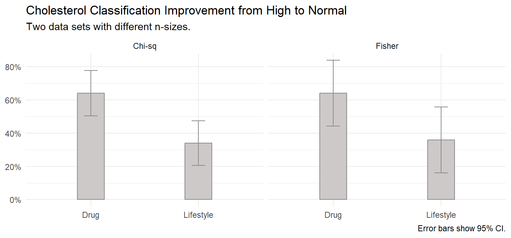

9 Multinomial ~ Multinomial
9.1 Chi-Square Test of Homogeneity
The chi-square test of homogeneity tests whether frequency counts of the R levels of a categorical variable are distributed identically across the C populations. It tests whether observed joint frequency counts \(O_{ij}\) differ from expected frequency counts \(E_{ij}\) under the independence model (the model of independent explanatory variables, \(\pi_{ij} = \pi_{i+} \pi_{+j}\). \(H_0\) is \(O_{ij} = E_{ij}\). The chi-square homogeneity test can be extended to cases where \(I\) and/or \(J\) is greater than 2.
There are two possible test statistics for this test, Pearson \(X^2 = \sum \frac{(O_{ij} - E_{ij})^2}{E_{ij}}\), and deviance \(G^2 = 2 \sum_{ij} O_{ij} \log \left( \frac{O_{ij}}{E_{ij}} \right)\).
Side note: z-Test of Two Proportions
The z-test and chi-square test produce the same statistical significance result because they are algebraically identical.
The z-test uses the difference in sample proportions \(\hat{d} = p_1 - p_2\) as an estimate of the difference in population proportions \(\delta = \pi_1 - \pi_2\) to evaluate an hypothesized difference in population proportions \(d_0 = \pi_0 - \pi_1\) and/or construct a \((1−\alpha)\%\) confidence interval around \(\hat{d}\) to estimate \(\delta\) within a margin of error \(\epsilon\).
The z-test applies when the central limit theorem conditions hold so that the normal distribution approximates the binomial distribution.
- the sample is independently drawn, meaning random assignment (experiments) or random sampling without replacement from \(n < 10\%\) of the population (observational studies),
- there are at least \(n_i p_i >= 5\) successes and \(n_i (1 - p_i) >= 5\) failures for each group \(i\),
- the sample sizes are both \(n_i >= 30\), and
- the probability of success for each group is not extreme, \(0.2 < \pi_i < 0.8\).
If these conditions hold, the sampling distribution of \(\delta\) is normally distributed around \(\hat{d}\) with standard error \(se_\hat{d} = \sqrt{\frac{p_1(1 - p_1)}{n_1} + \frac{p_2(1 − p_2)}{n_2}}\). The measured values \(\hat{d}\) and \(se_\hat{d}\) approximate the population values \(\delta\) and \(se_\delta\). Define a \((1 − \alpha)\%\) confidence interval as \(\hat{d} \pm z_{\alpha / 2}se_\hat{d}\) or test the hypothesis of \(d = d_0\) with test statistic \(z = \frac{\hat{d} − d_0}{se_{d_0}}\) where \(se_{d_0} = \sqrt{p^*(1 - p^*) \left(\frac{1}{n_1} + \frac{1}{n_2}\right)}\) and \(p^*\) is the overall success probability.
9.2 Fisher’s Exact Test
Fisher’s exact test is an “exact test” in that the p-value is calculated exactly from the hypergeometric distribution rather than relying on the approximation that the test statistic distribution approaches \(\chi^2\) as \(n \rightarrow \infty\).
The test is applicable in situations where
- the row totals \(n_{i+}\) and the column totals \(n_+j\) are fixed by study design (rarely applies), and
- the expected values of >20% of cells (at least 1 cell in a 2x2 table) have expected cell counts >5, and no expected cell count is <1.
The p-value from the test is computed as if the margins of the table are fixed. This leads under a null hypothesis of independence to a hypergeometric distribution of the numbers in the cells of the table (Wikipedia). Fisher’s exact test is useful for small n-size samples where the chi-squared distribution assumption of the chi-squared and G-test tests fails. Fisher’s exact test is overly conservative (p values too high) for large n-sizes.
The Hypergeometric density function is \[f_X(k|N, K, n) = \frac{{{K}\choose{k}}{{N-K}\choose{n-k}}}{{N}\choose{n}}.\]
The density is the exact hypergeometric probability of observing this particular arrangement of the data, assuming the given marginal totals, on the null hypothesis that the conditional probabilities are equal.
Case Study 4
The case study below uses a data set from Laerd and a second modified version. The first data set passes the chi-square test of homogeneity requirements. The second (in parentheses), fails the n-sizes test.
A researcher recruits 100 (50) patients who have a “high” classification of cholesterol and who currently have a poor lifestyle. The researcher randomly assigns 50 (25) of them to a drug intervention and 50 (25) to a lifestyle intervention. After six months, a doctor reclassifies the patients as either still having a “high” classification of cholesterol or now having a “normal” classification of cholesterol.
The chi-sq data set has the following summary statistics.
The Fisher data set has the following summary statistics.
Conditions
n-Size
The chi-square test of homogeneity applies with the CLT conditions hold.
- the sample is independently drawn,
- there are at least 5 successes (Normal) and failures (High) for each group \(i\),
- the sample sizes for both groups are >=30, and
- the probability of success for each group is not extreme, \(0.2 < \pi_i < 0.8\).
The conditions hold for the chi-sq data set, but not for the Fisher data set.
Test
Chi-Square
(ind_discrete$chisq_test <- ind_discrete$chisq_dat %>%
tabyl(intervention, risk_level) %>%
chisq.test(correct = FALSE))
Pearson's Chi-squared test
data: .
X-squared = 9.0036, df = 1, p-value = 0.002694100 patients with a high cholesterol classification were randomly assigned to either a drug or lifestyle intervention, 50 in each intervention. The test of two proportions used was the chi-square test of homogeneity. At the conclusion of the drug intervention, 32 patients (64%) had improved their cholesterol classification from high to normal compared to 17 patients (34%) in the lifestyle intervention, a difference in proportions of 0.30, p = 0.0027.
Fisher
(ind_discrete$fisher_test <- ind_discrete$fisher_dat %>%
tabyl(intervention, risk_level) %>%
fisher.test())
Fisher's Exact Test for Count Data
data: .
p-value = 0.08874
alternative hypothesis: true odds ratio is not equal to 1
95 percent confidence interval:
0.08497039 1.15362199
sample estimates:
odds ratio
0.3241952 50 patients with a high cholesterol classification were randomly assigned to either a drug or lifestyle intervention, 25 in each intervention. At the conclusion of the drug intervention, 16 patients (64%) had improved their cholesterol classification from high to normal compared to 9 patients (36%) in the lifestyle intervention. Due to small sample sizes, Fisher’s exact test was run. There was a non-statistically significant difference in proportions of 0.28, p = 0.0887.